8 Управление доступом к веб-интерфейсу¶
Примечание
В этой главе описаны все возможные опции меню.
Однако не все модели устройств используют все эти параметры меню. обзор модели Предоставляет информацию о том, доступна ли конкретная функция в используемой модели устройства.
8.1 Пользователи¶
АК-ШУМКАР позволяет создавать и управлять несколькими пользователями с разными ролями и разрешениями. При первоначальной настройке устройства в меню администрирования ГОС будет создан первый пользователь – администратор веб/сканирования. С помощью этого пользователя можно создавать и управлять различными пользователями.
- Роли
Управление пользователями устройств обеспечивает разрешения на основе ролей для доступа к веб-интерфейсу. Роль определяет, какие параметры веб-интерфейса может видеть и использовать пользователь. Доступ на чтение и запись можно настроить по роликам отдельно.
Различные ролики уже настроены по умолчанию. Дополнительные ролики можно создать и использовать администратор.
Применение роли реализуется не в веб-интерфейсе, а в базовом протоколе управления «Ак Шумкар» (GMP) и, таким образом, влияет на всех клиентов GMP.
- Группы
Пользователи могут быть организованы в группах. Это служит главным образом для логических группировок.
Группы и ролики можно использовать для разрешений сразу после использования.
Каждому пользователю подключается ряд IP-адресов, который содержит разрешенные или запрещенные цели. Устройство блокирует сканирование любых других IP-адресов, кроме указанных. Аналогичным образом можно запретить доступ к интерфейсам устройства.
Управление пользователями полностью осуществляется с помощью устройства. Внешние источники управления пользователями не упоминаются. Однако для поддержки централизованной аутентификации и синхронизации паролей устройство можно интегрировать в центральный сервер LDAPS или RADIUS (см. главу) 8.5). Сервер используется только для проверки пароля при входе в систему, все остальные настройки выполняются в управлении пользователями устройства.
8.1.1 Создание пользователя¶
Примечание
Только администраторы могут создавать дополнительные пользователи и управлять ими.
Пользователь может быть создан следующим образом:
Войдите в систему как администратор.
Выбирать Администрирование > Пользователи в меню.
Нажмите
 в нижней части шкафа.
в нижней части шкафа.Заполните поля ввода (см. Рис. 8.1):
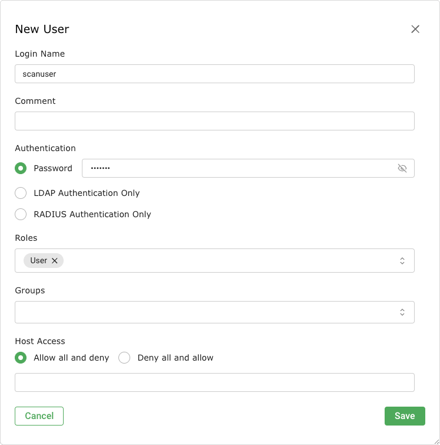
Рис. 8.1 Создание нового пользователя¶
- Имя для входа
Имя, используемое для входа в систему. В имени пользователя разрешены только следующие символы:
Все буквенно-цифровые символы
- (бросаться)
_ (подчеркивание)
. (точка)
Этот поле ввода является обязательным.
Примечание
При использовании централизованного управления пользователями (см. главу 8.5), могут применяться ограничения по длине и типам символов в зависимости от сервера LDAP или RADIUS. Кроме того, пользователь должен быть создан с тем же именем (rDN), которое используется сервером.
- Аутентификация
Метод, найденный для входа в систему.
- Пароль
Если выбран этот параметр, аутентификация выполняется локально с использованием имени входа и входа.
Пароль может сохранять символы любого типа и практически не имеет ограничений по длине.
При использовании специальных символов помните, что они должны быть доступны на всех внешних клавиатурах и правильно поддерживаться всеми клиентскими программами и операционными системами. Копирование и установка специальных символов для паролей может привести к тому, что пароли перестанут действовать в зависимости от этих внешних факторов.
Если Пароль Переключатель выбран, поле ввода является обязательным.
- Только аутентификация LDAP
Если выбрана эта опция, аутентификация осуществляется с использованием централизованного управления пользователями (см. главу). 8.5).
- Только аутентификация RADIUS
Если выбрана эта опция, аутентификация осуществляется с использованием централизованного управления пользователями (см. главу). 8.5).
- Роли
Роль Определяет права пользователя. Каждый пользователь может иметь несколько ролей.
Примечание
Если роль не выбрана, пользователь не будет иметь никаких разрешений и, следовательно, не сможет войти в веб-интерфейс.
Роли Админ, Пользователь, Информация, отель, Гость и Монитор доступен. Дополнительно можно добавлять и настраивать собственные ролики (см. главу 8.2.2).
Если пользователь с настраиваемой ролью должен иметь возможность использовать веб-интерфейс, для этого потребуется как минимум одно из следующих разрешений:
аутентифицировать
get_settings
помощь
Более подробная информация см. в Главе 8.2.
- Группы
Каждый пользователь может быть членом нескольких групп. Разрешениями можно управлять с помощью группы (см. главу 8.4).
- Хост-доступ
Хосты, на которых пользователю разрешено проведение сканирования. Ограничения возражений и на администраторов, но они могут их снять самостоятельно. Пользователи с Пользователь роль или роль без доступа к управлению, пользователи не могут обходить ограничения. В итоге можно либо список запрещенных (разрешить все и запретить некоторые), либо список разрешенных (запретить все и разрешить некоторые).
- Разрешить все и запретить
В целом разрешена проверка всех систем. Сканировать нельзя только с очевидностью защищенной системы.
- Запретить все и разрешить
Сканирование всех систем вообще запрещено. Сканировать можно только с очевидностью защищенной системы.
Кончик
В целом следует использовать методологию разрешенных списков. Это гарантирует, что пользователи не будут сканировать системы, сотрудники из-за ответственности за свою зону ответственности, сотрудники, находящиеся где-то в Интернете, или случайно реагирующие на сбойные проверки.
Можно указать имена систем или адреса IPv4/IPv6 (отдельные IP-адреса, диапазоны IP-адресов или сегменты сети). В следующем списке приведены некоторые примеры:
192.168.15.5 (адрес IPv4)
192.168.15.5-192.168.15.27 (длинная форма адресов IPv4)
192.168.15.5-27 (краткая форма электронных адресов IPv4)
192.168.15.128/25 (диапазон адресов IPv4, нотация CIDR)
2001:db8::1 (адрес IPv6)
2001:db8::1-2001:db8::15 (полная форма протоколов IPv6)
2001:db8::1-15 (краткая форма электронных адресов IPv6)
2001:db8::/120 (диапазон адресов IPv6, нотация CIDR)
Все параметры можно комбинировать и сопоставлять, а также приводить в виде списка разделенных запятых. По умолчанию маска подсети в нотации CIDR ограничена максимум 20 для IPv4 и 116 для IPv6. Причина этого в том, что максимальное количество IP-адресов на одну цель для большинства устройств составляет 4096. Если максимальное количество IP-адресов больше, например для АК-ШУМКАР 6500, можно настроить маски подсети большего размера.
Нажмите Сохранять.
→ Пользователь создан и отображается на Пользователи страница.

8.1.2 Управление пользователями¶
Страница списка
Всех существующих пользователей можно отобразить, выбрав Администрирование > Пользователи в меню при входе в систему как администратор.
Для всех пользователей отображается следующая информация:
- Имя
Имя, присвоенное пользователю при ведении учетной записи.
Глобальные пользователи – это пользователи, созданные в меню администрирования ГСН (см. гл. 6.2.1). Они отмечены значком
 .
.- Роли
Роль пользователя (см. главу 8.2).
- Группы
Группы, к которым принадлежит пользователь (см. главу 8.3).
- Хост-доступ
Хосты, на которых пользователю разрешено проведение сканирования.
- Тип удостоверения
Метод, найденный для входа в систему.
Локальный: локальное подтверждение подлинности с использованием имени входа и президента.
Аутентификация RADIUS осуществляется с помощью централизованного управления пользователей (см. главу 8.5).
LDAP: аутентификация осуществляется с помощью централизованного управления пользователями (см. главу) 8.5).
Для всех пользователей доступны следующие действия:
 Удалить пользователя. Удалять можно только тех пользователей, которые на данный момент не зарегистрированы в системе и не являются суперадминистраторами.
Удалить пользователя. Удалять можно только тех пользователей, которые на данный момент не зарегистрированы в системе и не являются суперадминистраторами. Отредактируйте пользователя.
Отредактируйте пользователя. Клонировать пользователя.
Клонировать пользователя. Экспортируйте пользователя в видео XML-файла.
Экспортируйте пользователя в видео XML-файла.
Примечание
Нажав или под списком пользователей одновременно можно или экспортировать более одного пользователя. Раскрывающийся список используется для выбора пользователей, которые будут удалены или экспортированы.
Страница раскрыта
Нажмите на имя пользователя, чтобы отобразить подробную информацию о пользователе. Нажмите  чтобы открыть страницу сведений о пользователе (см. Рис. 8.2).
чтобы открыть страницу сведений о пользователе (см. Рис. 8.2).
Доступны следующие вкладки:
- Информация
Общая информация о пользователе.
- Пользовательские теги
Присвоенные теги (см. главу 7.4).
- Разрешения
Разрешения пользователя или других пользователей/ролей/групп на ресурсы пользователя (см. главу 8.4).
В левом верхнем углу пульта доступны следующие действия:
 Ознакомьтесь с соответствующим главой руководства пользователя.
Ознакомьтесь с соответствующим главой руководства пользователя. Показать страницу списка всех пользователей.
Показать страницу списка всех пользователей.- Создайте нового пользователя (см. главу 8.1.1).
- Клонировать пользователя.
- Отредактируйте пользователя.
- Удалить пользователя. Удалять можно только тех пользователей, которые на данный момент не зарегистрированы в системе и не являются суперадминистраторами.
- Экспортируйте пользователя в видео XML-файла.

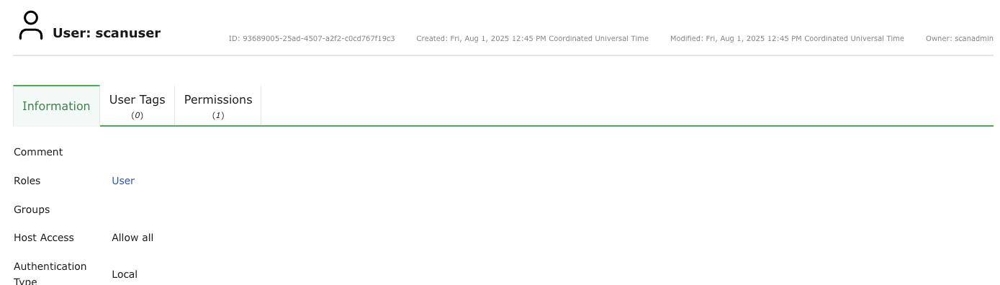
Рис. 8.2 Подробная информация о пользователе¶
8.1.3 Одновременный вход¶
Одновременно в систему могут войти два пользователя.
Если один и тот же пользователь хочет войти в систему более одного раза одновременно, вход необходимо выполнить с другого компьютера или с помощью другого браузера. Повторный вход в тот же браузер делает первый вход недействительным.
8.1.4 Создание гостевого входа¶
Гость имеет лишь ограниченный доступ к веб-интерфейсу.
Чтобы разрешить гостевой доступ, можно создать пользователя и назначить ему роль Гость (см. главу 8.1.1). Зная пароль, гость теперь может войти в систему и увидеть страницу. Панели мониторинга.
Чтобы гость мог войти в систему без пароля, эту функцию необходимо активировать в меню администрирования ГОС (см. гл. 6.2.1.4).
8.2 Роли¶
Веб-интерфейс поддерживает создание и настройку собственных ролей пользователей.
По умолчанию доступны следующие роли:
- Админ
Эта роль имеет все разрешения по умолчанию. Особенно разрешено создавать и управлять другими пользователями, ролями и группами.
- Пользователь
Эта роль по умолчанию имеет все разрешения, за исключением управления пользователями, ролями и группами. Этой роли не разрешено синхронизировать каналы и управлять ими. В веб-интерфейсе нет доступа к странице Администрация.
- Информация
Эта роль (информационный браузер) имеет доступ только для чтения к информации VT и SCAP. Вся остальная информация недоступна. Роль может изменять личные настройки, например, менять пароль.
- Гость
Эта роль соответствует роли Информация но не имеет права изменять настройки пользователя.
- Монитор
Эта роль имеет доступ к системным отчетам устройства (см. главу 16.1).
- отель
Эта роль имеет доступ для чтения к системе, но не имеет права запускать или создавать новые сканирования. Он имеет доступ только для чтения к сканам, для которых он был установлен в качестве наблюдателя.
- Суперадминистратор
Эта роль имеет доступ ко всем объектам всех пользователей. Никакого отношения к суперпользователю это не имеет(su/корень) в меню администрирования ГСН. Эту роль нельзя настроить в веб-интерфейсе, а пользователей с этой ролью нельзя удалить с помощью веб-интерфейса. Управление пользователями с этой ролью осуществляется с помощью меню администрирования ГОС (см. главу 8.2.5).
Примечание
Только администраторам разрешено создавать дополнительные роли и управлять ими.
Примечание
Изменение ролей по умолчанию невозможно, но их можно скопировать (клонировать) и впоследствии изменить.
Это обеспечивает согласованное поведение при обновлении программного обеспечения.
8.2.1 Клонирование существующей роли¶
Если существующая роль точно соответствует требованиям, новую роль можно создать путем клонирования существующей роли:
Войдите в систему как администратор.
Выбирать Администрирование > Роли в меню.
В строке существующей роли нажмите
.В строке клона нажмите
.Введите название роли в поле ввода Имя (видеть Рис. 8.3).
В раскрывающемся списке выберите пользователей, которым должна быть назначена роль. Пользователи.
Добавьте разрешение, выбрав его в раскрывающемся списке. Имя и щелкнув Создать разрешение.
Добавьте суперразрешение, выбрав соответствующую группу в раскрывающемся списке. Группа и щелкнув Создать разрешение.
Удалите разрешение, нажав
 в списке Разрешения общего командования.
в списке Разрешения общего командования.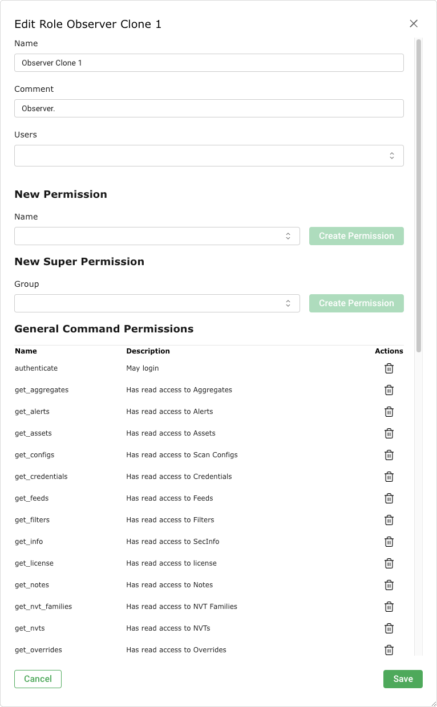
Рис. 8.3 Редактирование клонированной роли¶
Нажмите Сохранять.

8.2.2 Создание роли¶
Если необходимо создать роль с ограниченной функциональностью, ее можно запустить с новой пустой ролью:
Войдите в систему как администратор.
Выбирать Администрирование > Роли в меню.
Создайте новую роль, нажав
.Определите роль.
Можно определить следующие детали роли:
- Имя
Имя роли может содержать буквы и цифры и иметь длину не более 80 символов.
- Комментарий (необязательно)
Комментарий описывает роль более подробно.
- Пользователи
Пользователей с этой ролью можно выбрать в раскрывающемся списке. Пользователи. Альтернативно, ролями можно управлять в профиле пользователя (см. главу 8.1.1).
Нажмите Сохранять.
→ Роль создана и отображается на странице Роли.
В строке вновь созданной роли нажмите
.Добавьте разрешение, выбрав его в раскрывающемся списке. Имя и щелкнув Создать разрешение.
Примечание
Если пользователи с этой ролью должны иметь возможность использовать веб-интерфейс, необходимы как минимум следующие разрешения:
аутентифицировать
get_settings
помощь
Разрешение write_settings позволяет пользователям менять свой пароль, часовой пояс и другие личные настройки.
Добавьте суперразрешение, выбрав соответствующую группу в раскрывающемся списке. Группа и щелкнув Создать разрешение.
Удалите разрешение, нажав
в списке Разрешения общего командования.Нажмите Сохранять.
8.2.3 Управление ролями¶
Страница списка
Все существующие роли можно отобразить, выбрав Администрирование > Роли в меню.
Для всех ролей отображается следующая информация:
- Имя
Название роли. Все роли по умолчанию являются глобальными ролями и отмечены значком
.
Для всех ролей доступны следующие действия:
- Переместите роль в корзину. В корзину можно переместить только созданные вами роли.
- Отредактируйте роль. Редактировать можно только самостоятельно созданные роли.
- Клонируйте роль.
- Экспортируйте роль в виде XML-файла.
Примечание
Нажав или под списком ролей можно одновременно переместить в корзину или экспортировать более одной роли. Раскрывающийся список используется для выбора ролей, которые нужно переместить в корзину или экспортировать.
Страница раскрыта
Нажмите на название роли, чтобы отобразить подробную информацию о роли. Нажмите чтобы открыть страницу сведений о роли.
Доступны следующие вкладки:
- Информация
Общие сведения о роли.
- Разрешения общего командования
Команды GMP, которые может выполнять эта роль.
- Пользовательские теги
Присвоенные теги (см. главу 7.4).
- Разрешения
Разрешения роли или других пользователей/ролей/групп на ресурсы роли (см. гл. 8.4).
В левом верхнем углу пульта доступны следующие действия:
- Ознакомьтесь с соответствующим главой руководства пользователя.
- Показать страницу со списком всех ролей.
- Создайте новую роль (см. главу 8.2.2).
- Клонируйте роль.
- Отредактируйте роль. Редактировать можно только самостоятельно созданные роли.
- Переместите роль в корзину. В корзину можно переместить только созданные вами роли.
- Экспортируйте роль в виде XML-файла.
8.2.4 Назначение ролей пользователю¶
Пользователь может иметь несколько ролей для группировки разрешений.
Роли назначаются при создании нового пользователя (см. Рис. 8.4, см. главу 8.1.1). Если пользователю назначено более одной роли, разрешения ролей будут добавлены.

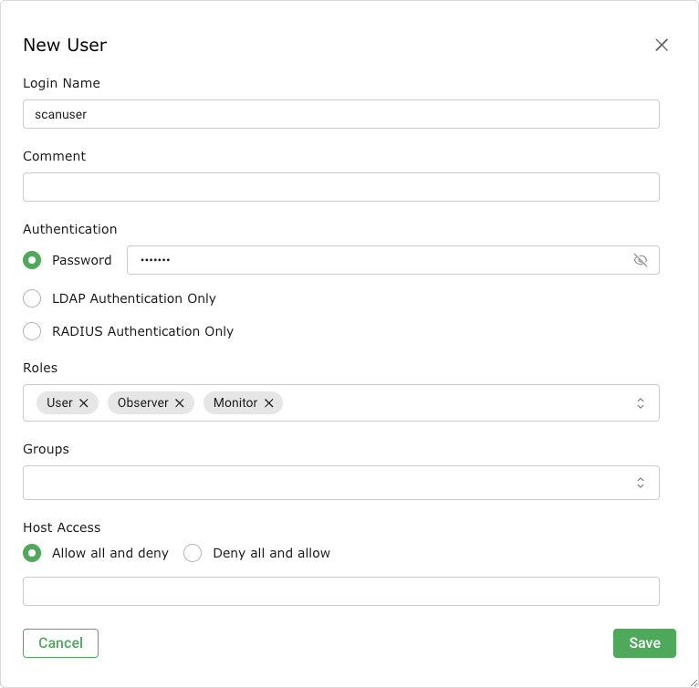
Рис. 8.4 Создание нового пользователя с несколькими ролями¶
8.2.5 Создание суперадминистратора¶
Роль Суперадминистратор это высший уровень доступа.
Роль Админ разрешено создавать, изменять и удалять пользователей. Кроме того, он может просматривать, изменять и удалять разрешения, но также подчиняется этим разрешениям. Если какой-либо пользователь создаст конфигурацию частного сканирования, но не предоставит к ней общий доступ, администратор не сможет получить к ней доступ.
Роль Суперадминистратор больше подходит для диагностических целей. Суперадминистратор исключен из ограничений разрешений и имеет право просматривать и редактировать любые параметры конфигурации любого пользователя.
Суперадминистратора необходимо создать в меню администрирования ГСН (см. гл. 6.2.1.5)
Примечание
Редактировать суперадминистратора может только суперадминистратор.
8.3 Группы¶
Группы используются для логического объединения пользователей. Можно создать неограниченное количество групп.
Разрешения могут быть назначены для групп (см. главу 8.4). По умолчанию группы не настроены.
8.3.1 Создание группы¶
Группу можно создать следующим образом:
Примечание
Только администраторы могут создавать группы и управлять ими.
Войдите в систему как администратор.
Выбирать Администрирование > Группы в меню.
Создайте новую группу, нажав
.Определите группу (см. Рис. 8.5).
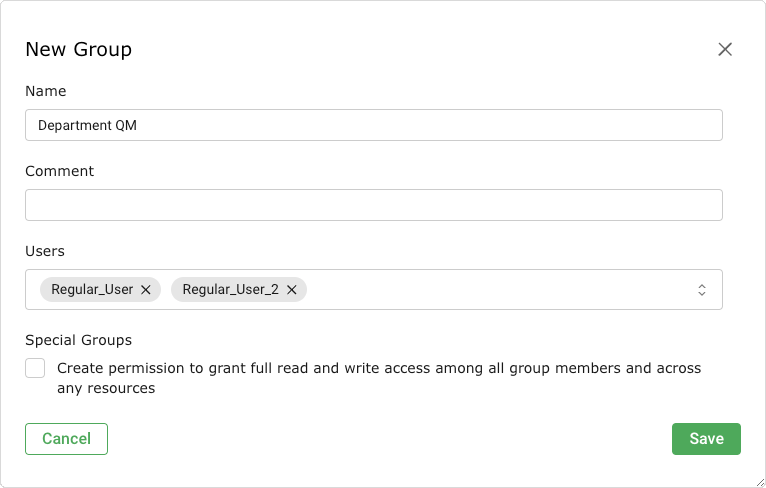
Рис. 8.5 Создание новой группы¶
Нажмите Сохранять.
→ Группа создана и отображается на странице Группы.

Можно определить следующие детали группы:
- Имя
Имя группы может содержать буквы и цифры и иметь длину не более 80 символов.
- Комментарий (необязательно)
Комментарий описывает группу более подробно.
- Пользователи
Членов группы можно выбрать из выпадающего списка. Пользователи. Альтернативно, членством в группах можно управлять в профиле пользователя (см. главу 8.1.1).
- Специальные группы
Установите флажок, если все участники группы должны иметь доступ на чтение и запись ко всем ресурсам группы.
8.3.2 Управление группами¶
Страница списка
Все существующие группы можно отобразить, выбрав Администрирование > Группы в меню.
Для всех групп отображается следующая информация:
- Имя
Название группы.
Для всех групп доступны следующие действия:
- Переместите группу в мусорную корзину.
- Отредактируйте группу.
- Клонируйте группу.
- Экспортируйте группу в виде XML-файла.
Примечание
Нажав или под списком групп можно переместить в корзину или экспортировать более одной группы одновременно. Раскрывающийся список используется для выбора групп, которые будут перемещены в корзину или экспортированы.
Страница раскрыта
Нажмите на название группы, чтобы отобразить подробную информацию о группе. Нажмите чтобы открыть страницу сведений о группе.
Доступны следующие вкладки:
- Информация
Общая информация о группе.
- Пользовательские теги
Присвоенные теги (см. главу 7.4).
- Разрешения
Разрешения группы или других пользователей/ролей/групп на ресурсы группы (см. Главу 8.4).
В левом верхнем углу пульта доступны следующие действия:
- Ознакомьтесь с соответствующим главой руководства пользователя.
- Показать страницу списка всех групп.
- Создайте новую группу (см. главу 8.3.1).
- Клонируйте группу.
- Отредактируйте группу.
- Переместите группу в мусорную корзину.
- Экспортируйте группу в виде XML-файла.
8.4 Разрешения¶
Выбирать Администрирование > Разрешения для отображения всех разрешений, назначенных в системе. Если создано несколько ролей, разрешений легко может быть сотни.
Каждое разрешение относится ровно к одному субъекту. Разрешение позволяет субъекту выполнять связанное действие.
Субъекты могут быть следующих типов:
Пользователи
Роли
Группы
Существует два типа разрешений:
- Разрешения на команды
Разрешения на командование привязаны к протоколу управления «Ак Шумкар» (GMP). Каждое разрешение на команду применяется к определенной команде GMP. Имя разрешения — это соответствующая команда.
Разрешение на команду — это либо разрешение на уровне команды, либо разрешение на уровне ресурса.
- Командный уровень
Если ресурс не указан, создается разрешение уровня команды. Разрешение на командном уровне позволяет субъекту запускать данную команду GMP.
- Уровень ресурса
При указании ресурса создается разрешение уровня ресурса. Разрешение на уровне ресурса позволяет субъекту запускать данную команду GMP на определенном ресурсе.
- Суперразрешения
(см. главу 8.4.2)
8.4.1 Создание разрешений и управление ими¶
Примечание
Обычно права назначаются в веб-интерфейсе с помощью управления ролями (см. главу 8.2).
Создание разрешений и управление ими с помощью страницы Разрешения рекомендуется только опытным пользователям, которым требуется определенное разрешение.
8.4.1.1 Создание разрешения¶
Новое разрешение можно создать следующим образом:
Выбирать Администрирование > Разрешения в меню.
Создайте новое разрешение, нажав
.Определите разрешение (см. Рис. 8.6).
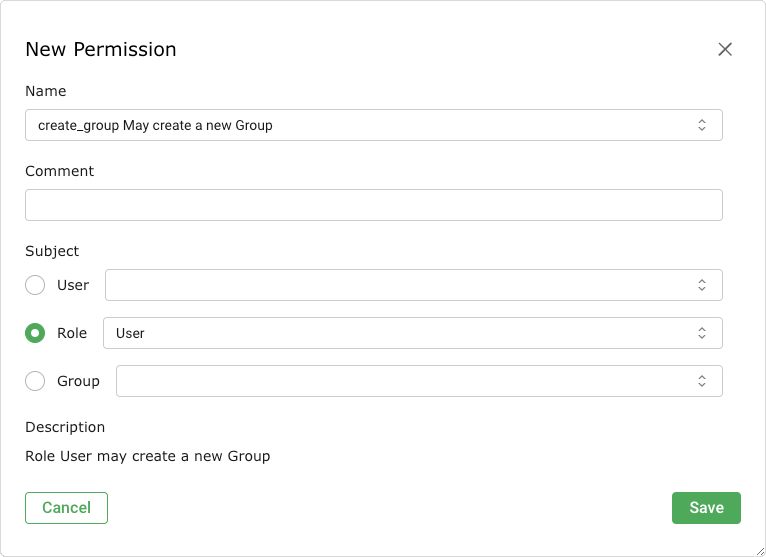
Рис. 8.6 Создание нового разрешения¶
Нажмите Сохранять.
→ Разрешение создано и отображено на странице Разрешения.

Могут быть определены следующие детали разрешения:
- Имя
Разрешение, которое должно быть предоставлено.
- Комментарий (необязательно)
Комментарий описывает разрешение более подробно.
- Предмет
Субъект (пользователь, роль или группа), которому должно быть предоставлено разрешение.
Примечание
Субъекты, для которых могут быть назначены разрешения, зависят от роли вошедшего в систему пользователя. Пользователи могут предоставлять разрешения другим пользователям, тогда как администраторы могут предоставлять разрешения пользователям, ролям и группам.
- Тип ресурса (только для разрешения Супер (Имеет супер доступ))
Тип ресурса (пользователь, роль или группа), к которому пользователь/роль/группа имеет супердоступ.
- Идентификатор пользователя/роли/группы (только для разрешения Супер (Имеет супер доступ))
Идентификатор пользователя/роли/группы, к которому пользователь/роль/группа имеет супердоступ.
- Описание
Текстовое описание разрешения.
8.4.1.2 Создание разрешений на странице сведений о ресурсе¶
При доступе к странице сведений о ресурсе, например к странице сведений о задаче, разрешения для ресурса можно предоставить непосредственно на странице сведений следующим образом:
Откройте страницу сведений о ресурсе.
Пример: Выбрать Сканирование > Задачи в меню.
Нажмите на название задачи.
Нажмите
чтобы открыть страницу, раскрыть проблему.Нажмите на описание Разрешения.
Нажмите
в открытом разделе Разрешения.Определите разрешение (см. Рис. 8.7).
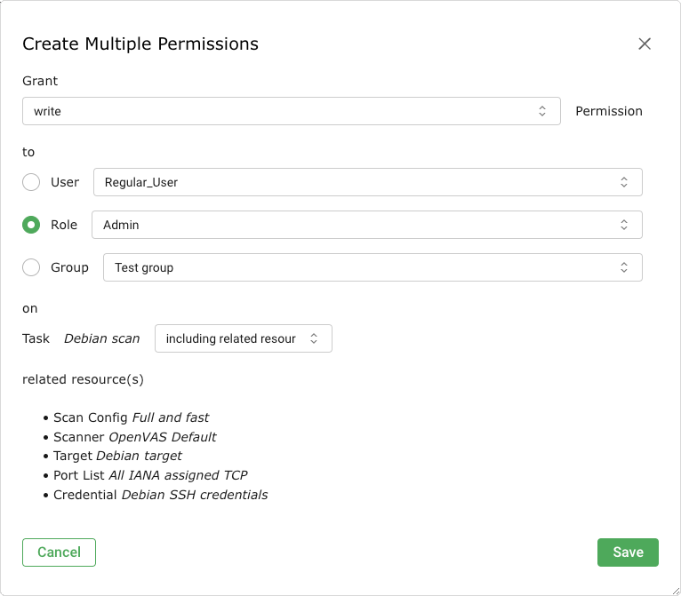
Рис. 8.7 Создание разрешения на странице сведений о ресурсе¶
Нажмите Сохранять.
→ Разрешение создано и отображается в разделе Разрешения на странице сведений о ресурсе.

Существует два типа разрешений, которые можно предоставить непосредственно на странице сведений о ресурсе:
- читать
Предоставление разрешения читать означает разрешение просмотра ресурса на страницах списка и на странице его сведений.
- писать
Предоставление разрешения писать означает разрешение просматривать и изменять (но не удалять) ресурс.
Некоторые типы ресурсов включают дополнительные разрешения:
- Задачи
При предоставлении разрешения писать для задачи разрешения на запуск (start_task), останавливаться (стоп_задача) и возобновить (резюме_задача) задача добавляется автоматически.
- Оповещения
При предоставлении разрешения писать для оповещения разрешение на проверку оповещения (test_alert) добавляется автоматически.
- Форматы отчетов и сканеры
При предоставлении разрешения писать для формата отчета или сканера — разрешения на проверку формата отчета (verify_report_format) или сканер (проверить_сканер) добавляется автоматически.
Для некоторых типов ресурсов можно выбрать, следует ли также предоставлять разрешения для связанных ресурсов (см. Рис. 8.7).
- Задачи
Для задач сюда входят оповещения и их фильтры, цель, а также связанные с ней учетные данные и список портов, расписание, сканер и конфигурация сканирования.
- Цели
Для целей это включают учетные данные и список портов.
- Оповещения
Для оповещений сюда входит фильтр, используемый в отчете.
Примечание
Разрешения также можно создавать только для связанных ресурсов.
Подробная информация о связанных ресурсах отображается под раскрывающимся списком.
8.4.1.3 Управление разрешениями¶
Страница списка
Все существующие разрешения можно отобразить, выбрав Администрирование > Разрешения в меню.
Для всех разрешений отображается следующая информация:
- Имя
Название разрешения. Глобальное разрешение отмечено значком
.- Описание
Текстовое описание разрешения.
- Тип ресурса
Тип ресурса, к которому имеет доступ пользователь/роль/группа.
- Ресурс
Имя ресурса, к которому имеет доступ пользователь/роль/группа.
- Тип темы
Тип субъекта (пользователь/роль/группа), которому предоставлено разрешение.
- Предмет
Субъект, которому предоставлено разрешение.
Для всех разрешений доступны следующие действия:
- Переместите разрешение в корзину. В корзину можно переместить только созданные вами разрешения.
- Отредактируйте разрешение. Редактировать можно только разрешения, созданные самостоятельно.
- Клонируйте разрешение. Клонировать можно только разрешения, созданные самостоятельно.
- Экспортируйте разрешение в виде XML-файла.
Примечание
Нажав или под списком разрешений можно одновременно переместить в корзину или экспортировать более одного разрешения. Раскрывающийся список используется для выбора, какие разрешения перемещаются в корзину или экспортируются.
Страница раскрыта
Нажмите на название разрешения, чтобы отобразить подробную информацию о разрешении. Нажмите чтобы открыть страницу сведений о разрешении.
Доступны следующие вкладки:
- Информация
Общая информация о разрешении.
- Пользовательские теги
Присвоенные теги (см. главу 7.4).
В левом верхнем углу пульта доступны следующие действия:
- Ознакомьтесь с соответствующим главой руководства пользователя.
- Показать страницу списка всех разрешений.
- Создайте новое разрешение (см. главу 8.4.1.1).
- Клонируйте разрешение. Клонировать можно только разрешения, созданные самостоятельно.
- Отредактируйте разрешение. Редактировать можно только разрешения, созданные самостоятельно.
- Переместите разрешение в корзину. В корзину можно переместить только созданные вами разрешения.
- Экспортируйте разрешение в виде XML-файла.
8.4.2 Предоставление суперразрешений¶
Любой ресурс на устройстве (например, пользователь, задача, цель) либо глобальный, либо принадлежит конкретному пользователю.
Глобальные ресурсы идентифицируются .
Неглобальные ресурсы может просматривать и использовать только их владелец. Индивидуальные разрешения необходимы, чтобы сделать ресурсы доступными для других пользователей, что довольно утомительно.
Чтобы избежать этого, пользователям, ролям и группам можно назначать суперразрешения. Это делает доступными все объекты других пользователей, ролей или групп.
Пользователь может получить суперразрешения для:
Пользователь
Роль
Группа
Любой
Эти суперразрешения обеспечивают полный доступ к любому ресурсу соответствующего пользователя, роли, группы или, по сути, ко всем ресурсам.
Примечание
Супер разрешение Любой не может быть задан явно. Это доступно только суперадминистратору (см. главу 8.2.5) и может быть установлен только путем его создания.
Пользователь может устанавливать суперразрешения только для объектов, созданных им самим. Только суперадминистратор может предоставить суперразрешения любому другому пользователю, роли или группе.
Нажмите на имя пользователя/роли/группы на странице. Пользователи/Роли/Группы для которого должны быть назначены суперразрешения.
Откройте страницу подробностей, нажав
.→ Идентификатор ресурса можно найти в правом верхнем углу (см. Рис. 8.8).
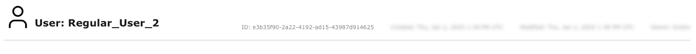
Рис. 8.8 Идентификатор ресурса¶
Запишите или скопируйте идентификатор.
Выбирать Администрирование > Разрешения в меню.
Создайте новое разрешение, нажав
.В раскрывающемся списке Имя выбирать Супер (Имеет супер доступ) (видеть Рис. 8.9).
Выберите переключатель типа субъекта, который должен иметь суперразрешения.
В соответствующем раскрывающемся списке выберите пользователя/роль/группу, у которой должны быть суперразрешения.
В раскрывающемся списке выберите тип ресурса, для которого необходимо назначить суперразрешения. Тип ресурса.
Введите или вставьте ранее определенный идентификатор ресурса в поле ввода. ИДЕНТИФИКАТОР.
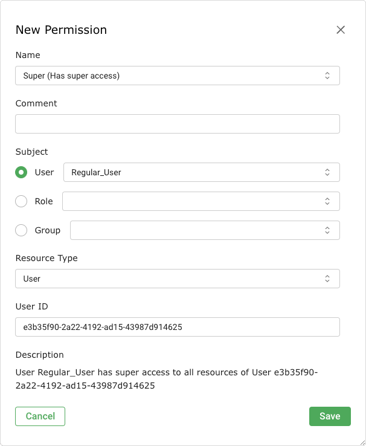
Рис. 8.9 Создание нового суперразрешения¶
Нажмите Сохранять.
→ Суперразрешение создано и отображается на странице Разрешения.


Кончик
Суперразрешения упрощают управление разрешениями на устройстве. Их можно легко назначать для целых групп. Это позволяет всем пользователям группы получать доступ ко всем ресурсам, созданным другими членами группы.
8.4.3 Предоставление доступа на чтение другим пользователям¶
8.4.3.1 Требования для предоставления доступа на чтение¶
Каждый пользователь может делиться неограниченным количеством самостоятельно созданных ресурсов. Для этого пользователю требуется глобальный get_users разрешение, а также специфический get_users разрешение для соответствующего пользователя, который должен получить доступ на чтение.
Примечание
Самый простой и рекомендуемый способ поделиться самостоятельно созданными ресурсами — использовать учетную запись администратора и создать учетные записи пользователей, которые должны получить доступ для чтения с этой учетной записью администратора.
Все остальные способы, описанные здесь, являются громоздкими и трудоемкими.
Требования к администраторам
По умолчанию у администраторов уже есть глобальный доступ. get_users разрешение.
Администратор может получить конкретные get_users разрешение для учетной записи, которая должна получить доступ на чтение двумя способами:
Создайте учетную запись самостоятельно, поскольку администраторы автоматически получают определенные get_users разрешение для учетных записей, которые они создали.
С помощью суперадминистратора.
Суперадминистратор может предоставить определенные get_users разрешения администратору следующим образом:
Войдите в веб-интерфейс как суперадминистратор (см. Главы 6.2.1.5 и 8.2.5).
Выбирать Администрирование > Пользователи в меню.
Нажмите на имя учетной записи, которая должна получить доступ на чтение от администратора.
Нажмите
.Нажмите на описание Разрешения.
Создайте новое разрешение, нажав
в разделе Разрешения.Выбирать читать раскрывающийся список Грант (видеть Рис. 8.10).
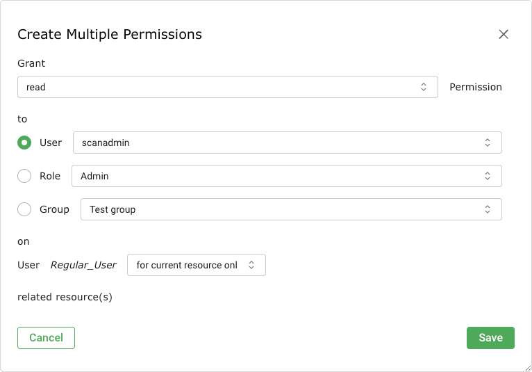
Рис. 8.10 Предоставление администратору определенного get_users разрешение¶
Выберите переключатель Пользователь.
В раскрывающемся списке выберите администратора, который должен иметь возможность предоставлять доступ для чтения. Пользователь.
Нажмите Сохранять.
→ Конкретные get_users разрешение создается и отображается в списке (см. Рис. 8.11).
Теперь администратор может предоставить доступ на чтение соответствующему пользователю, как описано в главе. 8.4.3.2.
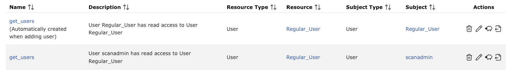
Рис. 8.11 Специфический get_users разрешение для администратора¶


Требования для обычных пользователей
Обычные пользователи не имеют глобального get_users разрешение по умолчанию. Его можно добавить следующим образом:
Войдите в веб-интерфейс как администратор.
Выбирать Администрирование > Роли в меню.
Создайте новую роль, нажав
.Входить
ГрантЧтениеПриватв поле ввода Имя.Нажмите Сохранять.
→ Роль создана и отображается на странице Роли.
В строке вновь созданной роли нажмите
.В раскрывающемся списке Имя в разделе Новое разрешение выбирать get_users (видеть Рис. 8.12).
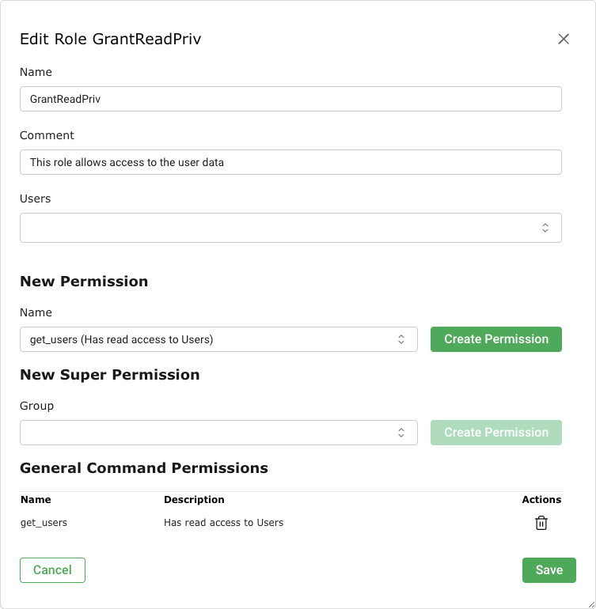
Рис. 8.12 Выбор разрешений для новой роли¶
Нажмите Создать разрешение.
→ Разрешение отображается в разделе Разрешения общего командования (видеть Рис. 8.12).
Нажмите Сохранять.
Выбирать Администрирование > Пользователи в меню.
В строке пользователя, которому должна быть назначена вновь созданная роль, нажмите кнопку
.В раскрывающемся списке Роли добавить роль ГрантЧтениеПриват.
Нажмите Сохранять.

Суперадминистратор может предоставить определенные get_users разрешения для пользователя следующим образом:
Войдите в веб-интерфейс как суперадминистратор (см. Главы 6.2.1.5 и 8.2.5).
Выбирать Администрирование > Пользователи в меню.
Нажмите на имя учетной записи, которая должна получить доступ на чтение от пользователя.
Нажмите
.Нажмите на описание Разрешения.
В разделе Разрешения щелкнуть
.Выбирать читать раскрывающийся список Грант (видеть Рис. 8.13).
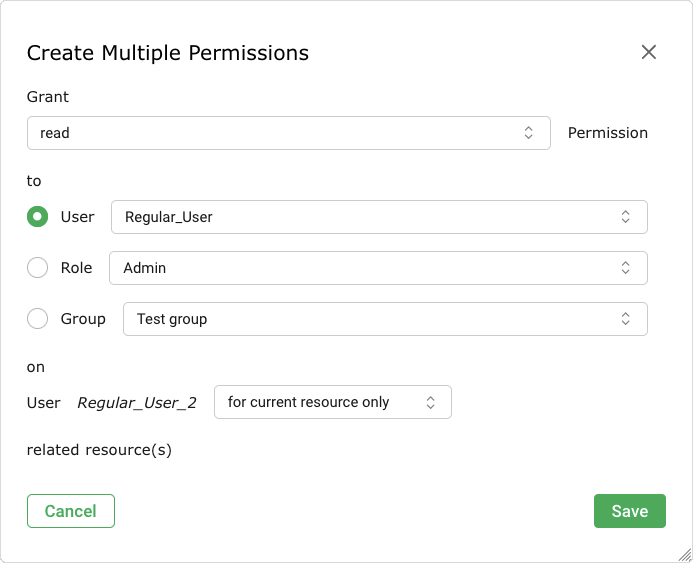
Рис. 8.13 Предоставление пользователю определенного get_users разрешение¶
Выберите переключатель Пользователь.
В раскрывающемся списке выберите пользователя, которому необходимо предоставить доступ на чтение. Пользователь.
Нажмите Сохранять.
→ Конкретные get_users разрешение создается и отображается в списке (см. Рис. 8.14).
Теперь пользователь может предоставить доступ на чтение соответствующему пользователю, как описано в главе. 8.4.3.2.
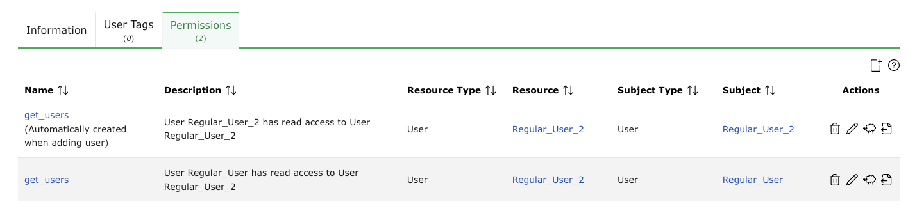
Рис. 8.14 Специфический get_users разрешение для пользователя¶


8.4.3.2 Предоставление доступа для чтения¶
Когда у пользователя есть глобальный и специфический get_users разрешение (см. главу 8.4.3.1), пользователь может делиться ресурсами следующим образом:
На соответствующей странице нажмите на название ресурса, которым необходимо поделиться.
Откройте страницу подробностей, нажав
.→ Идентификатор объекта можно найти в правом верхнем углу (см. Рис. 8.15).
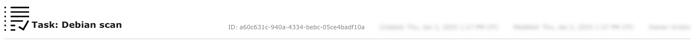
Рис. 8.15 Идентификатор ресурса¶
Запишите или скопируйте идентификатор.
Выбирать Администрирование > Разрешения в меню.
Создайте новое разрешение, нажав
.В раскрывающемся списке Имя выберите разрешение для объекта, к которому будет предоставлен общий доступ.
Фильтр: get_filters
Конфигурация сканирования: get_configs
Тревога: get_alerts
Примечание: get_notes
Переопределить: get_overrides
Ярлык: get_tags
Цель: get_targets
Задача с отчетом: get_tasks
Расписание: get_schedules
Выберите переключатель Пользователь (видеть Рис. 8.16).
В соответствующем раскрывающемся списке выберите пользователя, которому будет предоставлен доступ к объекту.
Введите или вставьте ранее определенный идентификатор ресурса в поле ввода. ИДЕНТИФИКАТОР.
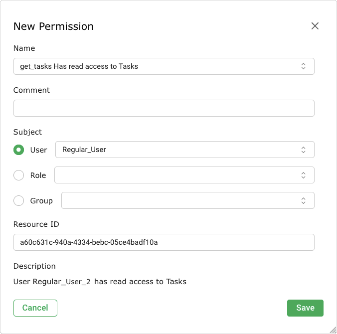
Рис. 8.16 Делитесь объектами с другими пользователями¶
Нажмите Сохранять.
→ Разрешение создано и отображено на странице Разрешения.


Примечание
Кроме того, ресурсы можно использовать совместно с ролями или группами.
Для этого глобальные и специальные разрешения get_groups – предоставление доступа на чтение группе – или get_roles – предоставление доступа на чтение к роли – являются обязательными и следуют тому же принципу, что описан в главе 8.4.3.1.
Исключение: пользователи с ролью по умолчанию уже имеют определенные get_roles разрешения для всех ролей по умолчанию.
8.5 Использование централизованного управления пользователями¶
Часто бывает сложно добиться успеха паролей, особенно в больших условиях с несколькими пользователями. Усилия по созданию новых или сбросу паролей часто очень велики. Чтобы избежать этого, устройства используют центральное хранилище паролей с использованием LDAPS или RADIUS.
Устройство будет использовать эту службу только для аутентификации отдельно для каждого пользователя. Это означает, что пользователи, которые должны иметь возможность проходить аутентификацию с помощью службы, должны быть настроены для аутентификации и также существовать на устройстве.
Примечание
Обязательным условием для использования центральной аутентификации является присвоение пользователям тех же имен, что и объекты в локальной сети LDAPS или на сервере RADIUS.
8.5.1 ЛДАПС¶
Устройство поддерживает только зашифрованные соединения через LDAP с использованием STARTTLS (порт 389) или LDAPS с использованием SSL/TLS (порт 636). Сервер LDAPS должен сделать свои службы доступными для SSL/TLS.
Следующие ссылки полезные для точной настройки всех доступных серверов LDAPS:
Майкрософт: https://learn.microsoft.com/en-us/archive/technet-wiki/2980.ldap-over-ssl-ldaps-certificate
8.5.1.1 Хранение сертификата сервера на устройстве¶
Чтобы проверить происхождение сервера LDAPS, устройство должно доверять сертификату сервера. Для этого сертификат, выдавший центр сертификации (CA), должен храниться на устройстве.
Для этого сертификата ЦС необходимо экспортировать в видеофайл в кодировке Base64.
Сертификат кодировки Base64 часто имеет расширение файла .pem. Сам файл начинается с ------НАЧИНАТЬ СЕРТИФИКАТ -------.
Если ЦС является промежуточным ЦС, необходимо импортировать полную цепочку сертификатов. Это часто справедливо, если используется официальный центр сертификации, поскольку корневой центр сертификации отделен от выдающего центра сертификации.
В этих случаях содержимое файла выглядит следующим образом:
-----НАЧИНАТЬ СЕРТИФИКАТ-----
......
Выпуск Калифорния
......
-----КОНЕЦ СЕРТИФИКАТ-----
-----НАЧИНАТЬ СЕРТИФИКАТ-----
......
Корень Калифорния
......
-----КОНЕЦ СЕРТИФИКАТ-----
Фактическое местонахождение сертификата может различаться в зависимости от среды.
Корпоративный сервер Univention (UCS)
Здесь сертификат CA получен из файла
/etc/univention/ssl/ucsCA/CAcert.pem. Этот файл уже содержит сертификат в правильном формате, и его необходимо загрузить при включении LDAPS.Активный каталог ЛДАПС
Если служба LDAP Active Directory еще не использует LDAPS, можно воспользоваться полезной следующей статьей: https://learn.microsoft.com/en-us/archive/technet-wiki/2980.ldap-over-ssl-ldaps-certificate.
Сертификат CA LDAPS Active Directory, а затем можно экспортировать следующим образом:
Примечание
Эти шаги необходимо выполнять за рабочим столом или сервером, имеющим доступ к консоли CA.
Откройте консоль CA на любом компьютере или на границе домена.
Щелкните правой кнопкой мыши имя центра сертификации и выберите Характеристики.
В диалоговом окне Сертификаты ЦС выберите вкладку Общий.
Выберите сертификат ЦС, к которому необходимо получить доступ.
Нажмите Посмотреть сертификат.
В диалоговом окне Сертификат, выберите вкладку Удостоверяющий центр.
Выберите имя корневого центра сертификации и нажмите Посмотреть сертификат.
В диалоговом окне Сертификат, выберите вкладку Подробности.
Нажмите Копировать в файл.
→ Откроется мастер экспорта сертификатов.
Нажмите Следующий.
Выбирать X.509 в кодировке Base-64 (.CER) на странице Формат файла экспорта.
Нажмите Следующий.
Введите путь и имя сертификата в поле ввода. Файл для экспорта.
Нажмите Следующий.
Нажмите Заканчивать.
→ Файл CER создается в указанном месте. Окно экспортного диалога сообщает, что процесс продвигается успешно.
Нажмите ХОРОШО.
Содержимое файла необходимо загрузить при включении LDAPS.
8.5.1.2 Подключение к дереву LDAPS¶
Для подключения к дереву устройство LDAPS использует очень простой интерфейс и простую операцию привязки с жестко заданным способом к объекту. Аутентификация LDAPS выполняется следующим образом:
Войдите в систему как администратор.
Выбирать Администрирование > LDAP в меню.
Нажмите
.Активируйте флажок Давать возможность (видеть Рис. 8.17).
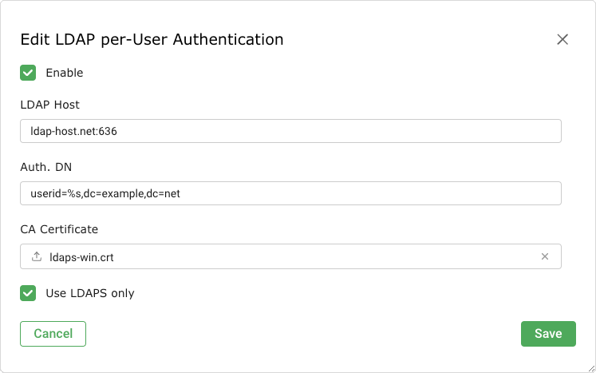
Рис. 8.17 Настройка аутентификации LDAPS¶
Введите хост LDAPS в поле ввода. LDAP-хост.
Примечание
Только в системе можно войти по IP-адресу или по имени.
Устройство применяется к хосту LDAPS с помощью SSL/TLS. Для проверки хоста сертификат сертификата хоста должен быть загружен на устройство (см. главу 8.5.1.1). Без аутентификации SSL/TLS LDAPS не будет принят.
Введите различаемые (DN) имена объектов в поле ввода. Авт. DN.
Примечание
Подстановочный знак
%sзаменяет имя пользователя.Примеры для Авт. DN являются:
cn=%s,ou=люди,dc=домен,dc=deЭтот формат работает для любого сервера LDAPS с указанными атрибутами. Атрибут Китай (общее имя). Пользователи в разных поддеревьях или на разной рекурсивной деревянном дереве LDAPS не применяются. Все пользователи, подключающиеся к устройству, должны находиться в одной ветке и на одном уровне дерева LDAPS.
uid=%s,ou=люди,dc=домен,dc=deЭтот формат работает для любого сервера LDAPS с указанными атрибутами. Атрибут жидкость (идентификатор пользователя) используется в качестве фильтра. Оно должно быть на первом месте. Атрибуты ou=люди,dc=домен,dc=de используются в качестве базовых объектов для выполнения поиска и соответствующего DN.
%s@domain.deЭтот формат обычно используется Active Directory. Точное определение пользовательского объекта не имеет значения.
домен.de\%sЭтот формат обычно используется Active Directory. Точное определение пользовательского объекта не имеет значения.
Для проверки хоста загрузите сертификат хоста, нажав кнопку Просмотреть….
Активируйте флажок Используйте только LDAPS если должны быть разрешены только соединения через LDAPS.
Примечание
Эта опция отключает STARTTLS и обычные текстовые соединения с сервером LDAP, разрешая соединения только через LDAPS. Это полезно в случаях, когда порт LDAP заблокирован брандмауэром.
Нажмите ХОРОШО.
→ Если аутентификация LDAPS включена (см. Рис. 8.18), вариант Только аутентификация LDAP доступен при создании или редактировании пользователя. По умолчанию эта опция отключена.
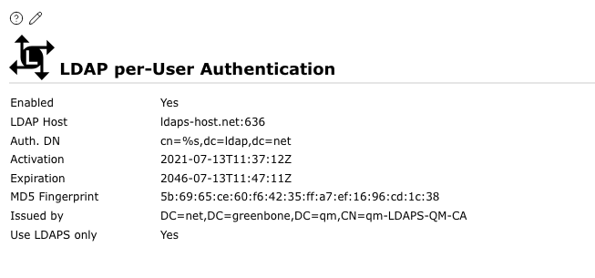
Рис. 8.18 Включена аутентификация LDAPS.¶
Создайте нового пользователя или отредактируйте существующего пользователя (см. главу 8.1).
Активируйте флажок Только аутентификация LDAP когда пользователю должно быть разрешено аутентифицироваться с помощью LDAPS (см. Рис. 8.19).
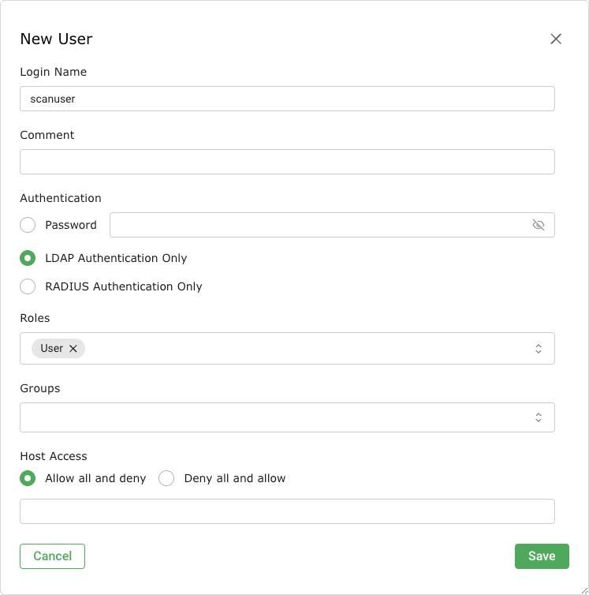
Рис. 8.19 Включение аутентификации с помощью LDAPS¶


Примечание
Прежде чем можно будет использовать аутентификацию с помощью LDAPS, пользователь должен существовать с тем же именем в LDAPS. Устройство не добавляет, не изменяет и не удаляет пользователей в LDAPS и не обеспечивает никому из пользователей LDAPS автоматический доступ к устройству.
Если аутентификация LDAPS не работает, убедитесь, что запись в LDAP-хост соответствует commonName сертификата сервера LDAPS. При наличии отклонений устройство отказывается использовать LDAPS-сервер.
8.5.2 РАДИУС¶
Аутентификация RADIUS выполняется следующим образом:
Войдите в систему как администратор.
Выбирать Администрирование > Радиус в меню.
Нажмите
.Активируйте флажок Давать возможность (видеть Рис. 8.20).
Введите имя хоста или IP-адрес сервера RADIUS в поле ввода. РАДИУС-хост.
Введите общий общий секретный ключ в поле ввода. Секретный ключ.
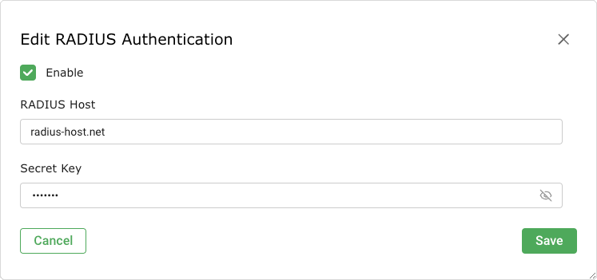
Рис. 8.20 Настройка аутентификации RADIUS¶
Нажмите ХОРОШО.
→ Если аутентификация RADIUS включена, опция Только аутентификация RADIUS доступен при создании или редактировании пользователя. По умолчанию эта опция отключена.
Создайте нового пользователя или отредактируйте существующего пользователя (см. главу 8.1).
Активируйте флажок Только аутентификация RADIUS когда клиенту должно быть разрешено провести аутентификацию с использованием RADIUS (см. Рис. 8.21).
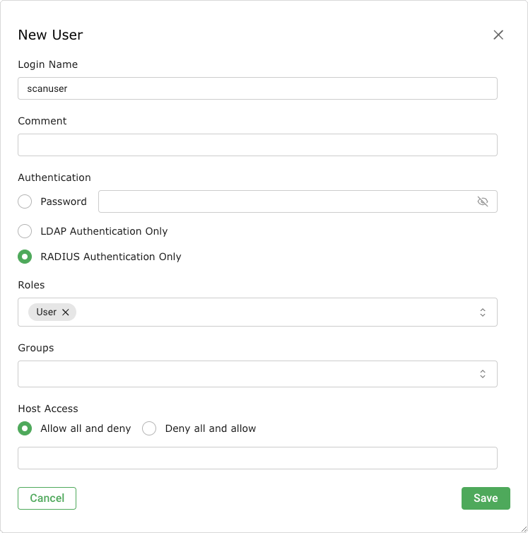
Рис. 8.21 Включение аутентификации с использованием RADIUS¶